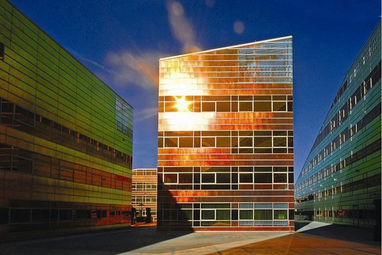
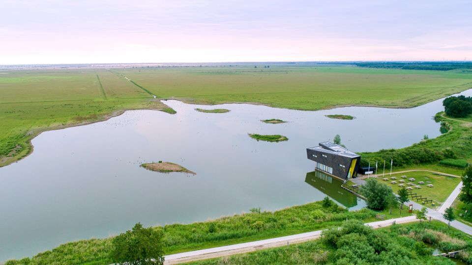

Almere is thuis voor de moderne architectuur, inclusief de opvallende "La Defense" gebouwen. De unieke stijl en vorm van deze gebouwen trekken jaarlijks vele architectuurliefhebbers.
Het natuurgebied Oostvaardersplassen is een unieke plaats om wilde dieren te spotten. Dit natuurgebied staat bekend om zijn rijke flora en fauna en is een populaire bestemming voor natuurliefhebbers.
